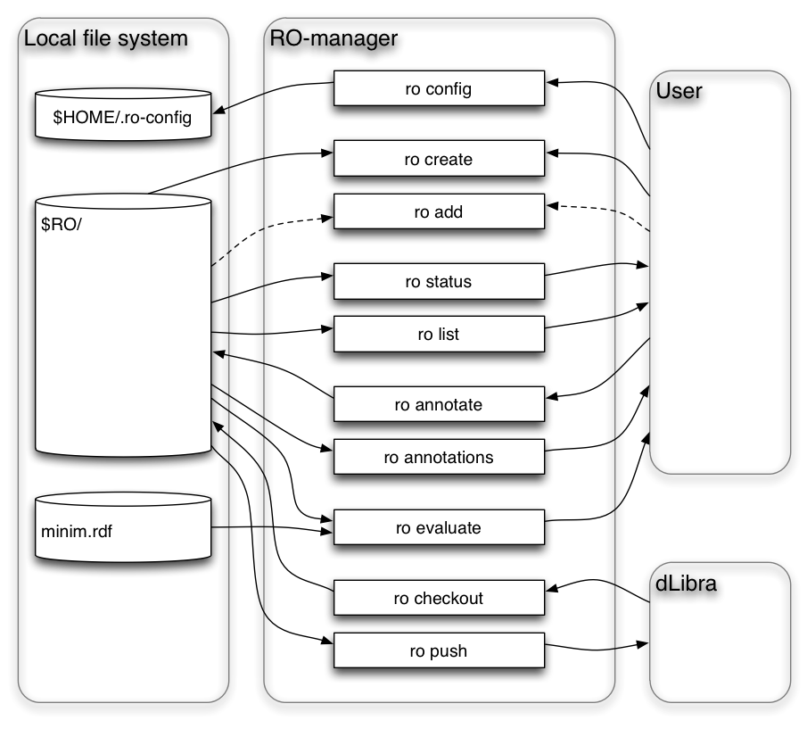

The Research Object Manager, or RO-manager, is a command-line tool for creating, displaying and manipulating Research Objects (ROs). The RO manager user guide contains instructions for users to use RO-manager to create and manipulate ROs in their local file system, and to exchange ROs with an RO repository (RO DL).
RO-manager is a command-line tool for creating, displaying and manipulating Research Objects (ROs) [2,3] in the host computer's local file system. This emphasis on working within the local file system is one feature that distinguishes it from the RO Digital Library portal (RO-DL) [1], with the intent that ROs can be exchanged between RO-DFL and the local file system.

The Research Object structure is built around a file system directory structure. For exchange between systems, this file structure may be zipped onto a single-file archive. For the purposes of this discussion, such packaging is not considered, and the RO will be described in terms of its constituent files as arranged in a local file system.
The RO specification describes an RO as an aggregation described
my a manifest in RDF [4] using the ORE vocabulary [5]. The RO
structure managed by RO-manager in the local host file system is a
directory subtree rooted in a single directory, whose URI is used as
the URI of the local copy of the corresponding RO – e.g.
file:///usr/robase/myproject/RO1/.
(The local copy of an RO is considered to be a distinct resource from
an RO in RODL, even when it has the same content.)
The root directory of a RO contains a special “hidden” file
named .ro/. This directory contains:
a manifest file, manifest.rdf, which it turn
contains RDF data describing the content of the RO according to the
ORE specification [5].
zero or more annotation files. These are part of the Annotation Ontology (AO) [6] structure used to incorporate additional metadata about the RO and its content. These files are created by RO-manager, and linked from the RO manifest using AO-derived structures, as described by the RO specification [3].
Not all annotations are necessarily stored in the .ro/
directory. It is also possible for annotations to be stored in the
user-constructed body of the RO and referenced from the RO manifest.
The .ro/ directory is used for the manifest, annotation
and other files that are generated by RO-manager.
Other than the .ro/ directory, the an RO consists of files created
by the user, and follow the directory structure with which they were
created. Thus, what distinguishes an RO from an any other
user-created collection of files is the presence of the .ro/
directory containing manifest.rdf.
|
|
initializes configuration parameters for the current user, including a base directory under which all ROs are created, details of the RO SRS service which RO-manager uses to save and retrieve ROs in an RO repository. |
|
|
lists commands and options recognized by RO-manager. |
|
|
displays a list of command options (the exact effect and applicability of these generally depends on the particukar command used). |
|
|
displays the current program version, and exits. |
|
|
creates a new RO in a designated directyory |
|
|
displays status informationand metadata about an RO |
|
|
adds a file or files to an RO manifest |
|
|
lists files in an RO directory tree |
|
|
... |
|
|
creates an annotation for an RO or a component |
|
lists annotations on an RO or component |
|
|
|
... |
|
|
retrieves or updates an RO from a repository into the local file system |
|
creates or updates an RO in a repository from the local file system |
|
|
|
... |
|
|
evaluates the content of an RO for completeness with respect to an indicated minimum information model |
|
|
... |
@@ (use examples from Kristina's MetS script)
RO-manager may be downloaded from github [7]. An easy option for obtaining a working copy is to download a zip archive of the ro-manager repository [8] at @@ro-manager zip download, and unpack the zip file into any chosen directory. An alternative is to use git to create a clone copy of the source repository (this makes it slightly easier to obtain updates, but requires a little familiarity with git)
@@grab text from wiki
@@releases?
RO-manager is implemented as a Python program, using Python version 2.7 (most functionality also works with Python 2.6, but testing is performed using Python 2.7).
Assuming Python is installed and appropriately configured, and the RO software has been installed to a directory $RO, the full command needed to run RO-manager is:
python $RO/src/ro command
On Linux systems, if the file $RO/src/ro is marked as
executable, it can be run directly by simply using the command:
$RO/src/ro command
To help to quickly check out RO-manager operations, a sample Bash
script, ro_sample.sh, is provided that can be run on
Linux , MacOS or Unix systems. The script is in directory $RO/src/,
and must be run from there.
|
|
indicates a directory containing the RO to be processed by an ro command. If not specified, defaults to the current working directory. |
|
|
verbose output: increases the amount of output generated. The exact effect depends on the command used. |
ro add [ -d dir ] [ -a ] file
Adds the named file or directory to the RO manifest.
dir is a directory of the RO structure to be
updated. Default is the current directory.
file is a file or directory within the RO
structure that is to be added to the RO manifest.
The -a or –all option causes
directories to be scanned recursively, and all non-hidden files to be
added (i.e. all directories and files whose name does not start with
a period).
The -v or –verbose option lists files
that are added to the manifest.
To add all files in an RO directory structure to the RO manifest, use this command:
ro add -d dir -a dir
where dir is the directory containing the RO.
ro annotate file attribute-name [ attribute-value ]
Creates an annotation for a specified file or directory in an RO, or
on the RO as a whole, as indicated by file. The
RO for which the annotation is created is implicit, being the RO that
contains the designated file. (If ROs are nested, the annotation is
created in the most closely containing RO.)
@@This seems a bit inconsistent, or ad-hoc. Maybe the implicit RO should be default, but able to be overridden by an explicit -d option??
attribute-name indicates the type of attribute
that is created. It is mapped to an RDF property URI used for the
annotation.
attribute-value indicates an attribute value
to be associated with the attribute. It is interpreted according to
the expected value of the attribute-type, or in the absence of any
such knowledge it is assumed to be a URI.
Annotation types are keywords that map to RDF property URIs. The
mapping is defined by the .ro_config file in the users
home directory, and is initialized by ro config to
contain the following entries:
type -
Word or brief phrase describing type of Research Object component
(dcterms:type)
keywords -
List of key words or phrases associated with a Research Object
component (dcterms:subject)
description -
Extended description of Research Object component
(dcterms:description)
format -
String indicating the data format of a Research Object component
(dcterms:format)
note -
String indicating some information about a Research Object component
(dcterms:note)
title - Title of Research Object component
(dcterms:title)
created - Date and time that Research Object
component was created (dcterms:created)
rdf:type - RDF type of the annotated object
(rdf:type)
@@Future development will allow URIs or CURIEs for annotation names. Maybe this works already?
ro annotations file
Displays RO annotations on the indicated file or directory. The RO from which the annotation is retrieved is implicit, being the RO that contains the designated file. (If ROs are nested, the annotation is created in the most closely containing RO.)
@@See above comment for ro annotate
ro annotations -d dir
Displays all annotations for the indicated RO and all its components.
dir is a directory of the RO structure to be
displayed. Default is the current directory.
ro checkout [ RO-identifier ] [ -d dir ] [ -r rosrs_uri ] [ -t access_token ]
Retrieves an RO from an RO repository, and creates or updates an equivalent object in the local host file system.
RO-identifier identifies the RO in the
repository. If it is ommitted, all ROs created by the user are downloaded.
dir is the directory to which the RO will be
retrieved. Default is the current directory.
rosrs-uri is the URI of the RO Storage and
Retrieval Service (RO SRS) to be used. This effectively addresses the
repository (RO DL) from which the RO is accessed. Default is the
value specified previously using the ro config command.
access_token is used to identify the user and authorize
access to RO DL. It can by generate from the
User Management Application. Default is the value
specified previously using the ro config command.
ro config -b robase -r rosrs-uri -u username -p password -e useremail
Initializes configuration for RO-manager for the current user. The
configuration details are saved in file .ro_config in
the current user's home directory.
robase is a base directory under which all ROs
are stored, directly or indirectly. Any attempt to create or acces an
RO not under this directory is rejected. (Originally, this was used
with ROBox to indicate the file area synchronized via DropBox. It has
been retained in the current RO SRS version of RO-manager as a guard
against accidental manipulation of files outside the area intended
for storing ROs.)
rosrs-uri is the URI of the RO Storage and
Retrieval Service (RO SRS) to be used. This effectively addresses the
repository (RO DL) from which the RO is accessed.
username and password are
the credentials used when accessing RO SRS.
useremail is an email address of the current
user. This is currently unused.
ro create “RO-name” [ -d dir ] [ -i RO-ident ]
Creates a new RO structure.
RO-name is a name (title) for the RO.
dir is a directory where the RO structure is
created. Default is the current directory.
RO-ident is an identifer associated with the
RO, which is also used as a unique identifier when saving an RO in a
digital library. @@default? (I think it is derived from RO-title)
ro evaluate completeness [ -d dir ] [ -a ] [ minim ] [ purpose ] [ target ]
Evaluates an RO for completeness with respect to a stated purpose and target resource.
dir is a directory of the RO structure to be
analyzed. Default is the current directory.
minim indicates a minimum information
description file, per [9]. This may be a relative URI within the RO
structure, or the name of some other file in the local file system.
Default is ???. @@check this. @@should be URI not just file name?
purpose and target are
used together to indicate the target resource and purpose for which
the evaluation is to be performed. For example, a constraint defined
by the minim file may indicate what is required for the RO as a whole
to be executable, or for a particular output dataset of the RO to be
(re)generated.
The -a or –all option causes a full
report of any unsatisfied minimum information requirement to be
generated. Otherwise, just a summary report is generated. @@check.
@@Need more levels?
ro list [ -a ] [ -d dir ]
Lists files in an RO directory structure.
dir is a directory where the RO structure is
created. Default is the current directory.
Option -a or –all lists all files
including “hidden” files. By default, only “normal” files are
listed
@@probably should have options to display files, manifest or both.
ro push [ -d dir ] [ -f ] [ -r rosrs_uri ] [ -t access_token ]
Saves an RO from the local host file system to an RO repository, creating or updating an RO stored there.
dir is the directory from which the RO will be
saved. Default is the current directory.
rosrs-uri is the URI of the RO Storage and
Retrieval Service (RO SRS) to be used. This effectively addresses the
repository (RO DL) from which the RO is accessed. Default is the
value specified previously using the ro config command.
access_token is used to identify the user and authorize
access to RO DL. It can by generate from the
User Management Application. Default is the value
specified previously using the ro config command.
@@Currently all files in the RO folder are sent to RO DL, but in the future only those aggregated in the manifest will be sent.
ro status [ -d <dir> ]
Displays basic information about the indicated RO.
dir is a directory of the RO structure to be
displayed. Default is the current directory.
(Rough notes only)
Extended range of annotation types, especially structured (machine processable annotations)
Extended range of evaluation options (e.g. liveness, extened Minim model options, etc.)
Clean up command structures to be more user-friendly, based on user feedback.
...
[2] http://www.wf4ever-project.org/wiki/display/docs/Research+objects
[3] http://www.wf4ever-project.org/wiki/display/docs/Research+Object+Vocabulary+Specification
[4] @@RDF
[5] @@ORE
[6] @@AO
[7] @@github
[8] @@ro-manager repository
[9] @@minim